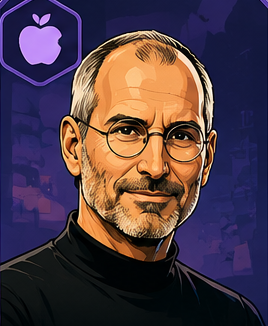

Advisor Council
Steve Jobs
Product Simplicity Advisor
Co-founder of Apple; former CEO of Apple and Pixar chairman
When to ask
Steve Jobs
Ask for his perspective when the product feels bloated, the user journey is getting noisy, or the team is adding features instead of sharpening the core experience.
Signature questions
- What can we remove and still make the product better?
- Is this simple enough that the user instantly understands it?
- Are we building something people will love, or just something that works?